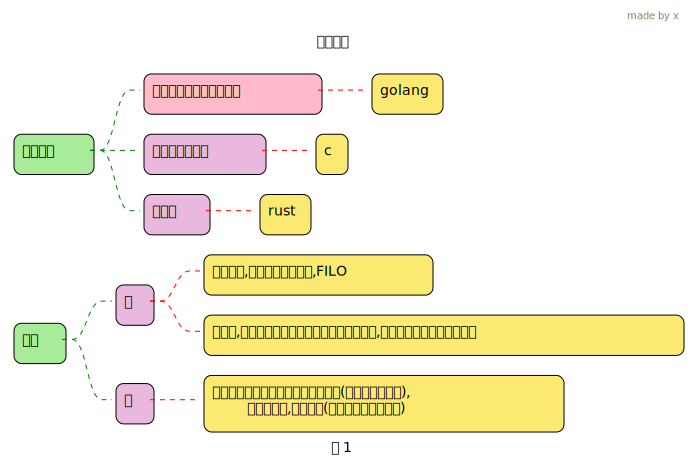
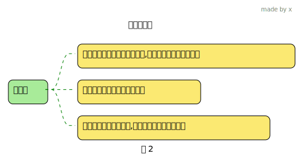
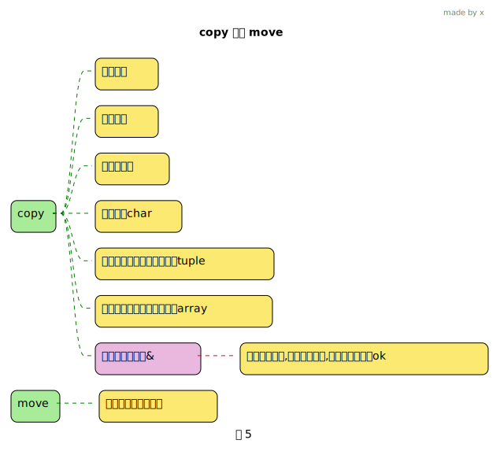
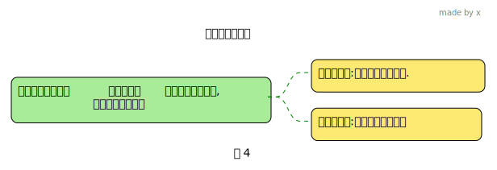

rust 所有权
1 所有权规则
所有权是rust用来管理内存的一系列规则
 2 变量作用域
fn main() {
println!("{}", 1);
{// 这一行时 s 变量 还没申明, 不可用
let s = "hello"; // s 变量可用
// do stuff with s
} // 这个作用域结束了, s 变量无效了
// println!("{}", s); // cannot find value s in this scope
}
为什么内存在持有它的变量离开作用域后会被无效了呢?
当变量离开作用域, Rust 会调用一个名为drop的特殊函数
设计string类型的作者可以在该drop函数中写一些释放内存的代码,以此实现自动释放内存的功能
不同类型变量的drop的实现可能不一样
Rust 在结尾的 } 处会自动调用 drop
3 Move & Copy
3.1 copy
类型实现了 Copy trait 则会被copy
fn main() {
let x = 5;
// 将x的值copy 给y, 2个变量同时存在
// 因为这里是直接在栈上,拷贝起来是非常快的
// 所以在设计上就直接简单复制,对比看后面的字符串的情况
let y = x;
println!("{:p}-{:p}", &x, &y);
println!("{x},{y}");
}不可变引用的赋值
3.2 move
fn main() {
// s1 拥有这个hello字符串的所有权
let s1 = String::from("hello");
println!("{:p}", &s1);
// s1 没有了 hello字符串的所有权,s1 将处于不可用状态
// 转移给了 s2,s2有了所有权
let s2 = s1;
println!("{:p}", &s2);
// 提示错误 : borrow of moved value,s1 已经被move了
// println!("{s1}");
println!("{s2}");
}fn main() {
let s: String;
{
let s1 = "hello".to_string();
s = s1;
}
// s的作用域, ok
println!("{s}");
}
字符串为啥设计成move?
- s2=s1 实际会将栈上的数据复制一份
- 如果这个时候 s1和s2 离开作用域, 那么要drop(释放堆上实际的字符串)了,会做释放同一块内存的操作,导致double free error,这样有安全问题
- 既然这样rust 设计成让执行 s2=s1的时候, 让s1 无效,这样s1跳出作用域时,不需要free了, 这就是 Move ,s1 was moved into s2
可变引用的赋值操作
fn main() {
let mut a = 1;
let b = &mut a;
let c = b;
// 报错了
// 因为 b 已经移动给了 c, b 已经不可用了
println!("{b}");
}
Important
rust 永远不会做深拷贝的事情,因为开销大,当然除非你主动
3.3 move 还是 copy
4 函数传参所有权问题
4.1 官方例子
fn main() {
let s = String::from("hello");
// s move into 函数
takes_ownership(s);
// 所以s 这个时候已经不可用了.
// println!("{s}"); //报错了
let x = 5;
// x would move into the function,
// 但是 x 是i32 类型,在栈上,前面说过它会 copy 操作
makes_copy(x);
println!("{x}"); // 这里还是可以访问的
} // Here, x goes out of scope, then s. But because s's value was moved, nothing
// special happens.
fn takes_ownership(some_string: String) {
// some_string comes into scope
println!("{}", some_string);
} // 跳出作用域,some_string 指向的堆以及自身(栈会弹)都会被drop, 内存会释放
fn makes_copy(some_integer: i32) {
// some_integer comes into scope
println!("{}", some_integer);
} // Here, some_integer goes out of scope. Nothing special happens.TODO
5 函数返回值所有权
fn main() {
let s1 = gives_ownership();
let s2 = String::from("hello");
// s2 move 给了 takes_and_gives_back的参数
// takes_and_gives_back 返回值 move 给了 调用者, 给了s3
let s3 = takes_and_gives_back(s2);
} // Here, s3 goes out of scope and is dropped. s2 was moved, so nothing
// happens. s1 goes out of scope and is dropped.
// 会将返回值 move 给它的调用者
fn gives_ownership() -> String {
let some_string = String::from("yours");
// 这个会作为返回值, move 给 当前函数的调用者
some_string
}
// This function takes a String and returns one
fn takes_and_gives_back(a_string: String) -> String {
// a_string comes into
// scope
a_string // a_string is returned and moves out to the calling function
}6 借用 borrow
前面调用函数我们发现,每次调用函数,都会有 taking ownership 和 returning ownership,很烦, 有没有 可以直接使用某个值,而不需要 转移所有权的呢? –> 借用
Tip
- 你借给别人你的书, 书的所有权是你的,别人只是借用一下.
- 你借给别人书时,说只能看,别涂涂画画的, => 不可变借用
- 你借给别人书时,说可以写写画画, => 可变借用
& 表示引用某些值, 而不取得其所有权
fn main() {
let s1 = String::from("hello");
// &s1, 引用s1, 知道s1的地址, 就意味着 知道它的值
let len = calculate_length(&s1);
println!("The length of '{}' is {}.", s1, len);
}
fn calculate_length(s: &String) -> usize {
s.len()
}//s 并不拥有 s1变量指向的值的所有权, 所以当 drop 后, s1变量指向的值不会free6.1 不可变和可变
fn main() {
let s = String::from("hello");
// changeImmutable(&s);
// 字符串 需要 可变
let mut s2 = String::from("hello");
// 引用也需要可变
changeMutable(&mut s2);
println!("{:?}-{:?}", s.as_ptr(), s2.as_ptr());
}
fn changeImmutable(some_string: &String) {
some_string.push_str(", world"); //报错了
}
// 参数需要可变
fn changeMutable(some_string: &mut String) {
// some_string.push_str(", world");
some_string.pop();
}6.2 编译是否成功的判断方法
含引用的代码,编译是否成功的判断逻辑
- rust 希望你是明确知道自己是想要如何使用这块内存,然后正确定义合适的变量
- 如果你使用不可变引用
- 那么定义这个不可变引用后到最后一次使用它之前, 你肯定是希望它指向的数据不会被修改, 要不然你用个屁的不可变啊
- 所以在定义一个不可变引用后 &a,你修改了a的数据, 然后你再使用这个不可变引用,那么就报错了,因为这和你的初衷是违背的
- 如果你使用了可变引用
- 那么定义这个可变引用后到最后一次使用它之前, 你肯定不希望有其他人来修改它,你希望只有你自己可以修改a的值,就是你在最后使用它之前,对 a 完全可控的,你不希望在读取它之前,被其他人修改
- 所以在定义一个可变引用后, 你要确保你最后在使用它之前, 没有其他人修改它
- 你可以认为 从你定义引用后到最后一次使用这个引用这段代码块是你这个引用变量的作用域
- 前面的逻辑是我从
rust为什么要这样设计去思考得出的结论 - 这里说的作用域是网上有这样说, 我觉得刚好符合我的逻辑思考,觉得挺好.
- 前面的逻辑是我从
报错的
fn main() {
let mut a = 3;
let b = &mut a;
a = 31; // 这里提示错误
// 在使用这个 可变引用前,有其他人对a做了修改了
// 这不符合 定义可变引用的初衷
println!("{}", b);
}正确的
fn main() {
let mut a = 3;
let b = &mut a;
*b = 11;
// 前面自己修改, 最后使用的地方, 都是想要的结果
// 用作用域来理解 也ok的
println!("{}", b);
a = 31;
println!("{}", a);
}作用域
fn main() {
let mut s2 = String::from("hello");
{
let r3 = &mut s2;
println!("{}", r3);
} // 这个时候r3 drop了. 所以后面 可以有 r4
let r4 = &mut s2;
println!("{}", r4);
}多个可变引用,ok的
报错的
fn main() {
let mut a = 3;
let b = &mut a;
let c = &mut a;
// 你使用b的时候,前面有 个c 可能做 对a的修改
// 这样你这里使用b时,可能就不是你想要的结果了.
// 按照前面的说法, 可以理解为: 一个作用域内 只能有一个可变引用
println!("{}", b);
println!("{}", c);
}报错了
fn main() {
let mut a = 3;
let b = &a;
let c = &mut a;
// 报错了, 你使用不可变引用,但是前面c 可能会修改a
println!("{}", b);
println!("{}", c);
}多个不可变引用
fn main() {
let mut s = String::from("hello");
// 在有一个可变引用之前的 多个不可变引用, 完全ok
// 这个道理很好理解,因为在 可变引用之前,变量不存在竞争
let a1 = &s; // 不可变引用
let a2 = &s; // 多个不可变引用 ,可以的
// 关键: 因为在可变引用之前,所以使用的时候,不会出现被修改的情况
println!("{}-{}", a1, a2);
let x1 = &mut s; // 可变引用
println!("{}", x1);
}报错
6.3 悬挂引用
rust 编译器会直接报错
6.4 reborrow?
6.4.1 可变借用直接赋值
报错的
fn main() {
let mut a = 3;
let b = &mut a;
let c = b; // b move 给了c
println!("{}", b); //报错
println!("{}", c);
}报错了, 你可能以为这不和上面一样吗, b move给了c, 你打印b肯定错了
fn main() {
let mut a = 3;
let b = &mut a;
let c: &mut i32 = b;
println!("{}", b);
println!("{}", c);
}实际上我们看下报错信息,非常有意思, 竟然说b被可变借用了,而不是move给了c?
error信息
先看下这个类比
fn main() {
let mut b = 1;
let c=&mut b;
// 使用b 前, 可能已经被修改了(因为c), 所以报错
println!("{}", b);
println!("{}", c);
}再看看前面的 let c: &mut i32 = b; 说是b被可变借用了,怎么就可变借用了? 只有下面这种可能了
let c: &mut i32 = b; 估计是等价于
完整类比
现在在看看正确的
6.4.2 可变借用函数传参
我是最先测试函数传可变借用时,发现奇怪现象的
fn main() {
let mut a = 3;
let b = &mut a;
ppp(b);
// ppp(&mut a); // 对比这个,如果用这个,就会报错了
println!("{b}"); // ok
}
// 相当于 let s:&mut i32=b;
fn ppp(s: &mut i32) {
*s = 11;
}同样的,b 没有发生 move